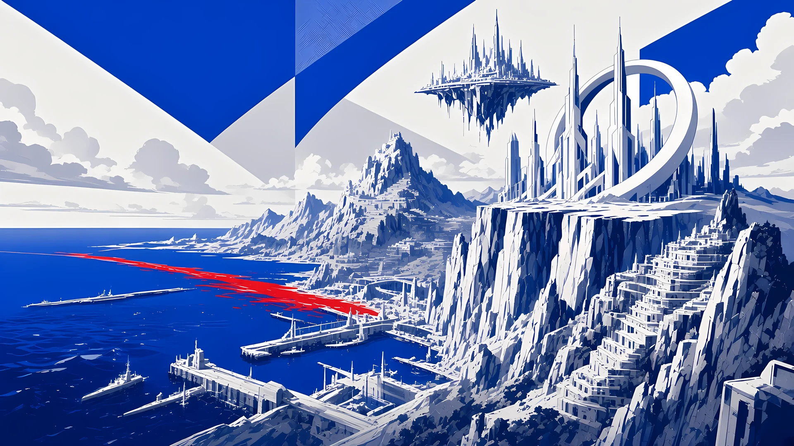
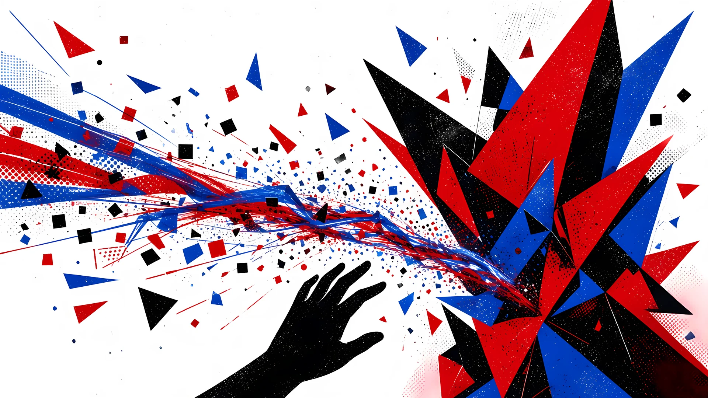
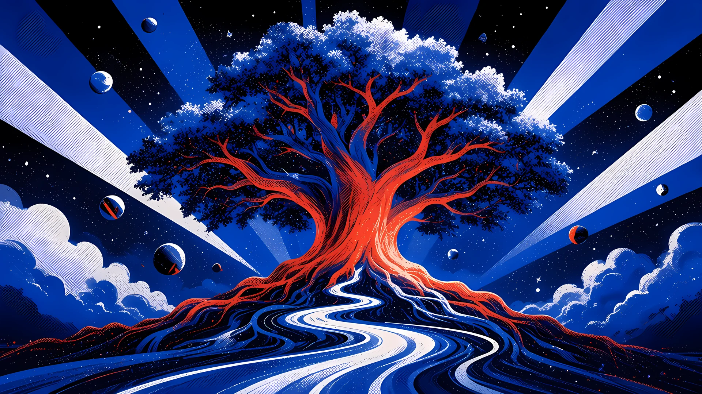

红潮之下的规则
世界
只记录能核对的顺序与规则；没定的地方，如实锁着。
- 8锁定问题

核心构想
红潮与源质
红潮信息＋源质＝能够在现实中引发灾难的红潮
层面 一信息层面的红潮
整理时，把信息层面的红潮与灾变表现区分开。
层面 二灾变表现
感染、异化与怪物，是已经存在的灾变后果。
源质
承载并使相关信息作用于现实的重要介质。普通异能是否全部依赖源质，尚未整体定稿。
它不是普通物质病毒能量频率温和资源
逐项核对吞噬物质孕育生命保存意识终极起源未知

能力
两种能力
较新的区分方向已经清楚；背后的统一机制尚未定稿。
普通异能现象
使用或影响现象。
是否全部依赖源质 · 遗传机制 · 人工异能分类 · 未定稿超限者倾向方案
红潮共鸣者专属称谓的倾向方案；最终命名与成员范围未定。
万物皆是信息发展中
正在发展的底层方向。信息如何对应质量、物质与能量，人类意识是否特殊，仍是开放问题。

宇宙层面
艾索拉之外
始源之树与克莱因河属于更大的宇宙尺度。
主要舞台艾索拉
宇宙尺度始源之树
宇宙尺度克莱因河
与斯诺的自由主题一同保留树联网 · 万林与始源之树的关系 · 分别保留
主控
两位主控
璇为女性主控、凪为男性主控；未被选择的一位也真实存在。
璇女性主控
凪男性主控
？未被选择的一位 · 也真实存在
未定区
未定区
总档明确留白的问题。网站不替它们给出答案。
- 红潮的终极起源保留未知。未定
- 白昼之冠与核危机完整机制、因果及年表待对齐。未定
- 信息与物质“万物皆是信息”如何对应质量、物质与能量。未定
- 普通异能、源质与遗传没有统一答案。未定
- 超限者最终命名与成员范围未定。未定
- 主控身世同源分裂的确认机制未定。未定
- 琴与弥塞尔完整行动链待逐段核对。未定
- 新比伦少受红潮原因未定。未定